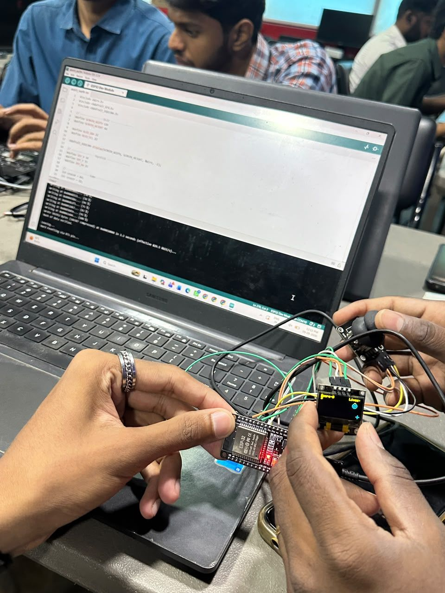
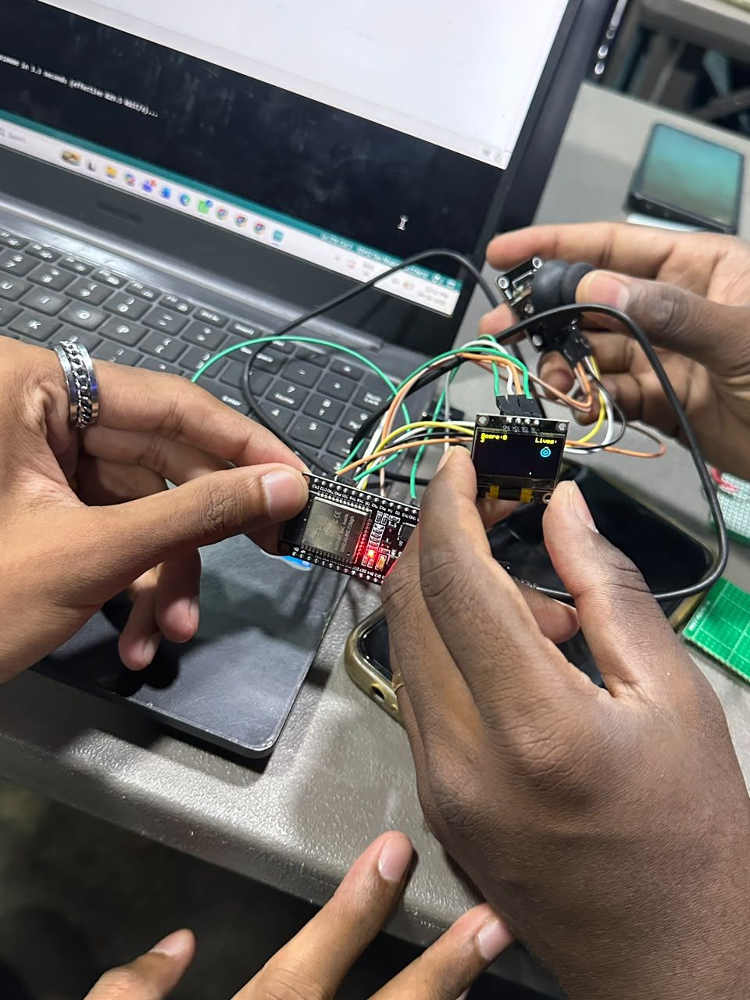
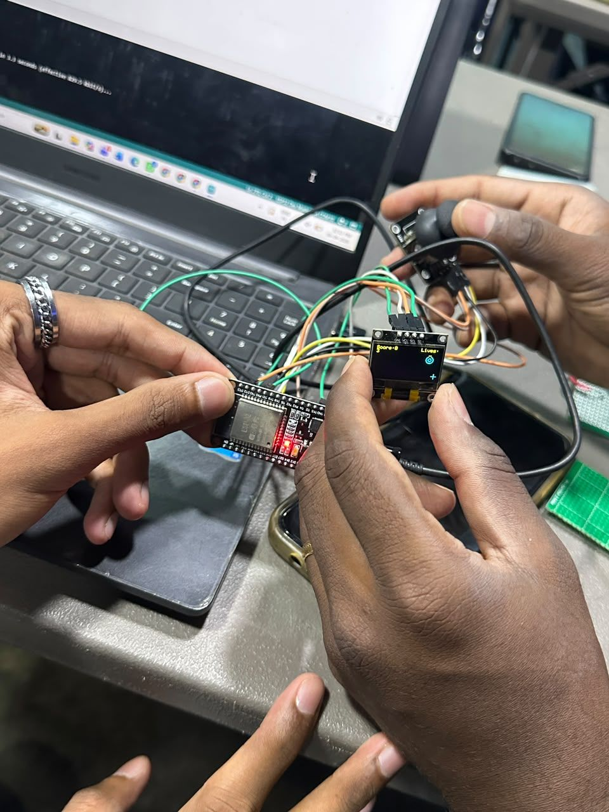
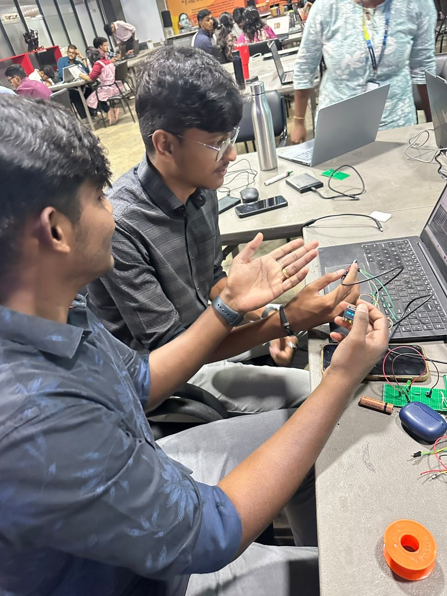
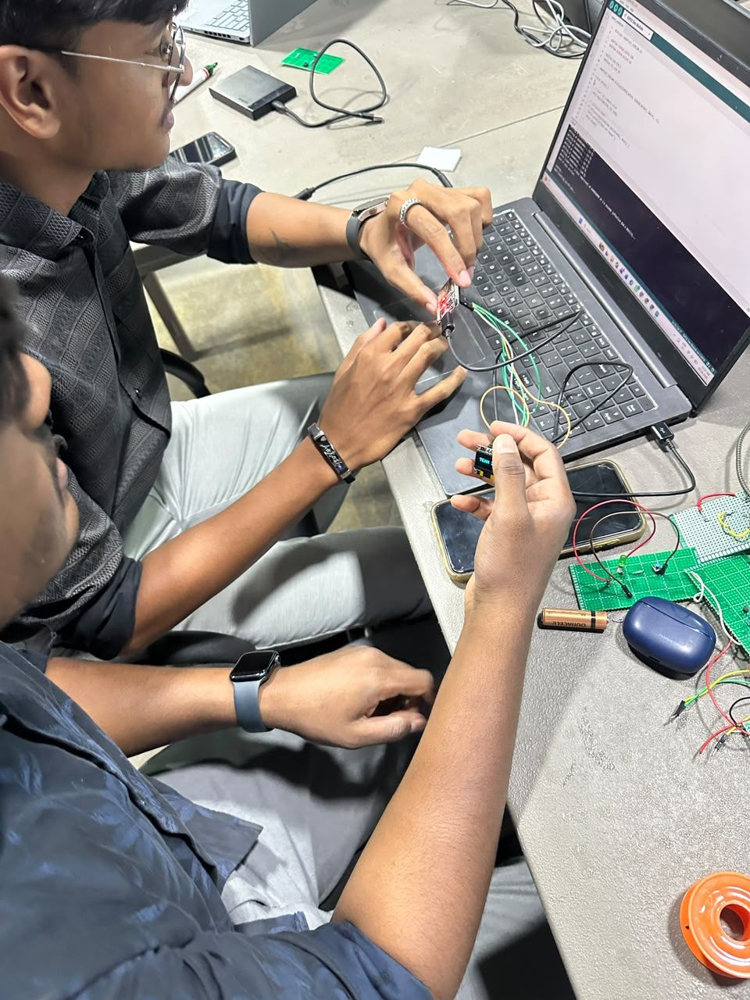
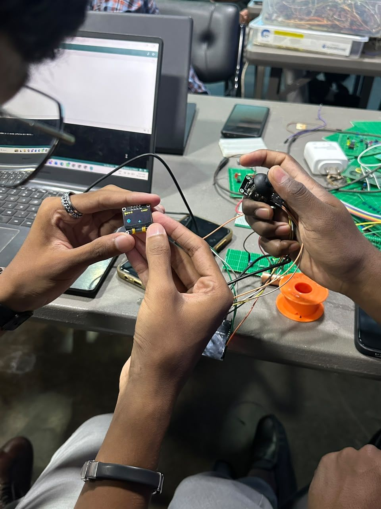
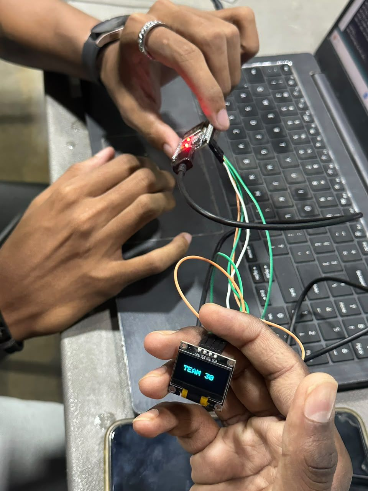

PROTOSEM · WEEK 7 · COMPLETED
Week 7
IoT and connectivity with the ESP32: from a local web server to a Firebase-connected smart-lighting system.
What I worked on
Five tasks that take an ESP32 from a local web page to cloud messaging, voice automation and a Firebase dashboard that monitors sensors and switches a mains bulb through a relay.
Tools used
ESP32 web server
Objective: switch the ESP32's onboard LED on and off from a browser over a local Wi-Fi network.
Context
This is the starting point of the week. Before using the cloud, the ESP32 itself is made to act as a small web server that answers requests from a browser.
Core concepts
Web server
The ESP32 joins Wi-Fi, gets a local IP address and listens for HTTP requests on port 80.
HTTP routes
Each URL (/, /on, /off) is tied to a function that runs when the browser requests it.
Built-in LED
The board's onboard LED needs no extra wiring, so the task isolates the networking part.
System architecture
Hardware and software
| Item | Purpose |
|---|---|
| ESP32 board | Wi-Fi microcontroller and web server |
| USB cable | Power and programming |
| Arduino IDE + ESP32 board package | Writing and uploading code |
| Browser on the same network | Sends the requests |
| Component | GPIO | Type |
|---|---|---|
| Built-in LED | LED_BUILTIN (GPIO 2 on most DevKit boards) | Digital output |
No external wiring is needed.
Setup
- Install the Arduino IDE.
- In File → Preferences, add the Espressif ESP32 board package URL to Additional Boards Manager URLs.
- In Boards Manager, install esp32 by Espressif Systems.
- Select your ESP32 board and its COM port under Tools.
Implementation
Full sketch
#include <WiFi.h>
#include <WebServer.h>
const char* ssid = "YOUR_WIFI_NAME";
const char* password = "YOUR_WIFI_PASSWORD";
WebServer server(80);
const char* page =
"<h1>ESP32 LED Control</h1>"
"<a href='/on'>LED ON</a> <a href='/off'>LED OFF</a>";
void handleRoot() { server.send(200, "text/html", page); }
void handleOn() { digitalWrite(LED_BUILTIN, HIGH); server.send(200, "text/html", page); }
void handleOff() { digitalWrite(LED_BUILTIN, LOW); server.send(200, "text/html", page); }
void setup() {
Serial.begin(115200);
pinMode(LED_BUILTIN, OUTPUT);
digitalWrite(LED_BUILTIN, LOW);
WiFi.begin(ssid, password);
Serial.print("Connecting");
while (WiFi.status() != WL_CONNECTED) { delay(500); Serial.print("."); }
Serial.println();
Serial.print("ESP32 IP: ");
Serial.println(WiFi.localIP());
server.on("/", handleRoot);
server.on("/on", handleOn);
server.on("/off", handleOff);
server.begin();
}
void loop() { server.handleClient(); }How the code works
WiFi.begin()connects to the network andWiFi.localIP()prints the address to open.server.on()links each URL to a handler function.- Each handler sets the LED pin with
digitalWrite()and returns the page. server.handleClient()inloop()checks for new browser requests.
Command flow
Testing
- Upload the sketch and open the Serial Monitor at 115200 baud.
- Note the IP address once Wi-Fi connects.
- Open that IP in a browser on the same network.
- Press LED ON and LED OFF and watch the board.
Evidence
Video proof
<video controls src="video/demo1.mp4"></video>Result
Repository
Things to check if it doesn't work
- The browser and ESP32 must be on the same network, and the network must be 2.4 GHz.
- The onboard LED pin differs between board variants, which is why
LED_BUILTINis used.
ESP32 with Adafruit IO and MQTT
Objective: connect the ESP32 to Adafruit IO and use MQTT to switch a 230 V bulb through a relay, from a cloud dashboard instead of a local page.
Context
Task 1 only worked on the same Wi-Fi network as the ESP32. This task moves control to the cloud. Adafruit IO is the platform, MQTT is the protocol, and the ESP32 acts on the messages it receives by switching a relay.
Core concepts
Adafruit IO
A cloud service that stores values in named feeds. Devices and dashboards read and write the same feed.
MQTT
A lightweight messaging protocol for IoT. Devices send messages through a broker instead of connecting to each other.
Publish and subscribe
A device publishes to a topic, and any device subscribed to that topic receives it. Here the ESP32 subscribes to the bulb feed.
Relay switching
The ESP32 only drives the relay's low-voltage input. The relay's contacts switch the mains bulb.
System architecture
Hardware and software
| Item | Purpose |
|---|---|
| ESP32 | Connects to Wi-Fi and Adafruit IO, runs the control code |
| Relay module | Isolates and switches the mains load |
| 230 V bulb and holder | The load being controlled |
| Arduino IDE + Adafruit IO Arduino library | Programming and MQTT handling |
| Adafruit IO account and feed | Cloud side of the connection |
| Component | GPIO | Type |
|---|---|---|
| Relay IN | GPIO 26 | Digital output |
| 230 V bulb | Relay output | Switched load |
Safety: the bulb connects only through the relay contacts. Never connect 230 V to an ESP32 pin, keep all mains wiring insulated and enclosed, and use a relay rated for the load.
Setup
- Create an Adafruit IO account and a feed named
bulb. - Copy your Adafruit IO username and key into the sketch. Keep the key out of any public repository.
- Wire the relay's IN pin to the ESP32 GPIO, and power the relay module as its datasheet requires.
- Connect the bulb through the relay's switched terminals.
- Upload the sketch and check the Serial Monitor for the Adafruit IO connection.
Implementation
Full sketch
#include <WiFi.h>
#include "AdafruitIO_WiFi.h"
// Wi-Fi
#define WIFI_SSID "YOUR_WIFI_NAME"
#define WIFI_PASSWORD "YOUR_WIFI_PASSWORD"
// Adafruit IO
#define IO_USERNAME "YOUR_ADAFRUIT_USERNAME"
#define IO_KEY "YOUR_ADAFRUIT_IO_KEY"
// Relay (use the GPIO you actually wired)
#define RELAY_PIN 26
AdafruitIO_WiFi io(IO_USERNAME, IO_KEY, WIFI_SSID, WIFI_PASSWORD);
AdafruitIO_Feed *bulbFeed = io.feed("bulb");
// Runs every time a new value arrives on the feed
void handleBulb(AdafruitIO_Data *data) {
String value = data->toString();
Serial.print("Received command: ");
Serial.println(value);
if (value == "ON" || value == "1" || value == "on") {
digitalWrite(RELAY_PIN, HIGH);
Serial.println("Relay ON");
} else if (value == "OFF" || value == "0" || value == "off") {
digitalWrite(RELAY_PIN, LOW);
Serial.println("Relay OFF");
}
}
void setup() {
Serial.begin(115200);
pinMode(RELAY_PIN, OUTPUT);
digitalWrite(RELAY_PIN, LOW); // start with bulb off
Serial.println("Connecting to Adafruit IO...");
io.connect();
while (io.status() < AIO_CONNECTED) {
Serial.print(".");
delay(500);
}
Serial.println("\nConnected to Adafruit IO");
bulbFeed->onMessage(handleBulb); // subscribe to the feed
bulbFeed->get(); // fetch the latest value
}
void loop() {
io.run(); // keep MQTT alive, process messages
}
How the code works
- Connect.
io.connect()joins Wi-Fi and authenticates with your username and key. - Subscribe.
onMessage(handleBulb)registers the function to call when thebulbfeed changes. - Decide.
handleBulbreads the text value and treats ON or 1 as on, OFF or 0 as off. - Switch. The relay pin goes HIGH or LOW, which closes or opens the bulb circuit.
- Stay connected.
io.run()inloop()must run constantly, or messages are missed.
Command flow
OFF follows the same path and opens the relay.
Evidence
Video proof
<video controls src="week7/video/demo2.mp4"></video>Things to check if it doesn't work
- The Wi-Fi network must be 2.4 GHz, and the ESP32 needs a stable connection before Adafruit IO will connect.
- The username, key and feed name in the sketch must match your Adafruit IO account exactly.
- Change the feed value and watch the Serial Monitor to confirm the message arrives.
- Confirm whether your relay module is active-HIGH or active-LOW. If the bulb is inverted, swap HIGH and LOW.
Result
Repository
Voice control with IFTTT
Objective: control the ESP32 with a spoken command, using IFTTT to turn the voice trigger into an HTTP request.
Context
Tasks 1 and 2 used a browser and a cloud dashboard. This task adds a voice layer: a phrase triggers an IFTTT applet, and the applet's action is a web request to the ESP32.
Core concepts
Voice trigger
A phrase spoken to a voice assistant that IFTTT is connected to starts the automation.
IFTTT applet
"If this, then that": the trigger on one side, an action on the other.
Web request
The action sends an HTTP GET to a URL such as /on or /off.
Request handling
The ESP32 serves those routes and sets the output.
System architecture
Hardware and software
| Item | Purpose |
|---|---|
| ESP32 + relay and bulb or LED | Output being controlled |
| Arduino IDE | Programming |
| IFTTT account | Automation layer |
| Voice assistant | Source of the command |
| Component | GPIO | Type |
|---|---|---|
| Relay IN (or LED) | Your chosen GPIO | Digital output |
Setup
- Upload the sketch below so the ESP32 serves
/onand/off. - In IFTTT, create an applet whose trigger is your voice phrase for ON.
- Set the action to a web request using GET to the ESP32's address followed by
/on. - Create a second applet for OFF using
/off. - Test each phrase and watch the Serial Monitor.
Reachability: IFTTT sends the request from the internet, so a private address like 192.168.x.x won't work. The ESP32 must be reachable from outside your network (port forwarding or a tunnel), or the command must go through a cloud service. Say which route you used. Exposing a device this way has security risks, so do it only on a test setup.
Implementation
Full sketch
#include <WiFi.h>
#include <WebServer.h>
const char* ssid = "YOUR_WIFI_NAME";
const char* password = "YOUR_WIFI_PASSWORD";
#define RELAY_PIN 26 // use the GPIO you wired
WebServer server(80);
void handleOn() {
digitalWrite(RELAY_PIN, HIGH);
server.send(200, "text/plain", "ON");
}
void handleOff() {
digitalWrite(RELAY_PIN, LOW);
server.send(200, "text/plain", "OFF");
}
void setup() {
Serial.begin(115200);
pinMode(RELAY_PIN, OUTPUT);
digitalWrite(RELAY_PIN, LOW);
WiFi.begin(ssid, password);
while (WiFi.status() != WL_CONNECTED) delay(500);
Serial.println(WiFi.localIP());
server.on("/on", handleOn);
server.on("/off", handleOff);
server.begin();
}
void loop() { server.handleClient(); }How the code works
- The ESP32 joins Wi-Fi and starts a server, as in Task 1.
/onand/offare the endpoints IFTTT calls.- Each handler sets the relay pin and replies with plain text so IFTTT sees a successful response.
Command flow
Evidence

.jpeg)

.jpeg)


Video proof
Result
Repository
Things to check if it doesn't work
- The spoken phrase must match the applet trigger.
- The URL in the web-request action must be reachable from the internet and use the right route.
- Test ON and OFF as separate applets.
Firebase IoT dashboard
Objective: build a login-protected web dashboard in HTML, CSS and JavaScript that shows temperature, humidity and light level and controls a bulb in MANUAL or AUTO mode. This task is software only. The hardware connects in Task 5.
Context
After local, cloud and voice control, the system needs a proper interface. The dashboard reads and writes Firebase so the ESP32 and the browser share one source of truth.
Core concepts
Firebase
Google's backend platform, used here for data and login.
Realtime Database
A JSON tree that pushes changes to every connected client instantly.
Authentication
Only signed-in users can see or change the data.
Dashboard
Cards for sensor values plus controls for the bulb and the mode.
System architecture
Hardware and software
| Item | Purpose |
|---|---|
| HTML, CSS, JavaScript | Dashboard interface |
| Firebase Authentication | Login |
| Firebase Realtime Database | Shared data |
No GPIO is used in this task.
Dashboard development
- Layout. Design a simple page for monitoring and control.
- Sensor monitoring. Add sections for temperature, humidity and the LDR light value.
- Database connection. Connect the page to Firebase Realtime Database to read and write values.
- Authentication. Add a login so only authorised users can open the dashboard.
- Bulb controls. Add ON and OFF controls, a MANUAL or AUTO switch and a bulb status display.
- Testing. Check sensor display, login, controls and data updates end to end.
Firebase configuration
- Create a Firebase project for the backend services.
- Enable Email/Password sign-in under Authentication and add a user.
- Create a Realtime Database with the
/sensorsand/controlpaths. - Add your web app configuration to the JavaScript so the dashboard can connect.
Database structure
Realtime Database JSON
{
"sensors": { "temperature": 0, "humidity": 0, "ldr": 0 },
"control": { "bulb": "OFF", "mode": "MANUAL" }
}Security rules (starting point)
{
"rules": { ".read": "auth != null", ".write": "auth != null" }
}Implementation
Firebase and script structure
Firebase
├── Authentication
└── Realtime Database
├── sensors
│ ├── temperature
│ ├── humidity
│ └── ldr
└── control
├── bulb
└── modeDashboard script (outline)
import { initializeApp } from "https://www.gstatic.com/firebasejs/10.12.0/firebase-app.js";
import { getAuth, signInWithEmailAndPassword } from "https://www.gstatic.com/firebasejs/10.12.0/firebase-auth.js";
import { getDatabase, ref, onValue, set } from "https://www.gstatic.com/firebasejs/10.12.0/firebase-database.js";
const app = initializeApp(firebaseConfig); // from your Firebase console
const auth = getAuth(app);
const db = getDatabase(app);
// Log in, then start listening
signInWithEmailAndPassword(auth, email, password).then(() => {
onValue(ref(db, "sensors"), (snap) => {
const d = snap.val();
tempEl.textContent = d.temperature;
humEl.textContent = d.humidity;
ldrEl.textContent = d.ldr;
});
onValue(ref(db, "control"), (snap) => {
const c = snap.val();
statusEl.textContent = c.bulb + " (" + c.mode + ")";
});
});
// Controls write to the database
bulbOnBtn.onclick = () => set(ref(db, "control/bulb"), "ON");
bulbOffBtn.onclick = () => set(ref(db, "control/bulb"), "OFF");
modeSelect.onchange = (e) => set(ref(db, "control/mode"), e.target.value);Dashboard functions
- Temperature: shows the value from the connected sensor.
- Humidity: shows the humidity reading.
- Light: shows the LDR value for ambient light.
- Bulb status: shows whether the bulb is on or off.
- MANUAL mode: the user switches the bulb from the dashboard.
- AUTO mode: the connected system switches the bulb by its own logic.
Evidence
Video proof
<video controls src="video/demo4.mp4"></video>Challenges and fixes
- Firebase connection: the web configuration must match your Firebase project.
- Authentication: sign-in must be enabled and the rules must require it.
- Database paths: the script must read and write the same paths as the structure above.
- Real-time updates: change a value in the console and confirm the dashboard updates.
Result
Repository
ESP32 with the Firebase dashboard
Objective: connect the ESP32 to the Firebase dashboard so it uploads sensor readings and follows the dashboard's bulb and mode commands.
Context
Task 4 built the interface and this task adds the physical device. The ESP32 writes readings to /sensors and reads /control, giving a connected smart-lighting system.
Core concepts
Sensor acquisition
The DHT11 gives temperature and humidity, and the LDR gives an analog light reading.
Cloud upload
The ESP32 writes readings to Firebase over Wi-Fi.
Remote control
The ESP32 reads the dashboard's mode and bulb command and drives the relay.
Automatic lighting
In AUTO mode the LDR reading is compared with a threshold to switch the bulb.
System architecture
Hardware and software
| Item | Purpose |
|---|---|
| ESP32 | Reads sensors, talks to Firebase, drives the relay |
| DHT11 | Temperature and humidity |
| LDR module | Light level |
| Relay module + bulb | Switched lighting |
| Arduino IDE + a Firebase library for ESP32 | Programming and database access |
| Component | GPIO | Type |
|---|---|---|
| DHT11 data | GPIO 4 | Digital input |
| LDR AO | GPIO 34 | Analog input |
| Relay IN | GPIO 26 | Digital output |
Check against your circuit: these pins are example values. Use the ones you actually wired. Never connect 230 V to the ESP32. The bulb connects only through the relay contacts.
Setup
- Wire the DHT11, LDR and relay to the ESP32.
- Install a Firebase client library for ESP32 in the Arduino IDE.
- Add your Wi-Fi details, Firebase project details and a sign-in for the ESP32, because the rules require authentication.
- Upload the sketch and confirm values appear under
/sensors.
Implementation
Control logic (outline)
// Outline of the control loop. Add your tested sketch,
// with your Firebase library calls and GPIO numbers.
const int LDR_THRESHOLD = 0; // set from your own calibration
void loop() {
float temp = readTemperature(); // DHT11
float hum = readHumidity(); // DHT11
int ldr = analogRead(34); // LDR
firebaseSet("/sensors/temperature", temp);
firebaseSet("/sensors/humidity", hum);
firebaseSet("/sensors/ldr", ldr);
String mode = firebaseGetString("/control/mode");
if (mode == "AUTO") {
// check whether your LDR reads higher in light or in dark
bulb(ldr > LDR_THRESHOLD);
} else { // MANUAL
bulb(firebaseGetString("/control/bulb") == "ON");
}
delay(2000);
}MANUAL and AUTO modes
| Mode | Behaviour |
|---|---|
| MANUAL | The dashboard's ON or OFF decides the relay. |
| AUTO | The LDR reading and the threshold decide the relay. |
How it works
- The ESP32 reads the sensors and uploads the values.
- It reads
/control/modefirst, so it knows whether to follow the dashboard or the LDR. - It sets the relay pin to match, and the dashboard shows the new state.
- Calibrate the LDR threshold under your own lighting conditions.
Evidence
Video proof
<video controls src="video/demo5.mp4"></video>Result
Repository
Things to check if it doesn't work
- Database paths must match between the sketch and the dashboard.
- The ESP32 must sign in, or the security rules will reject its writes.
- Confirm whether your relay is active-HIGH or active-LOW.
Additional lab work: OLED display and joystick
Photos and clips from a separate bench session with an ESP32 driving an OLED display and a joystick module, including a score and lives screen and a TEAM 30 message.
Photos







Video clips
Key takeaways
Local vs cloud control
A local web server only works on the same network. MQTT and Firebase let the device be controlled from anywhere.
Publish and subscribe
MQTT devices talk through a broker and topics rather than directly to each other.
Isolate the mains side
The ESP32 only drives the relay's low-voltage input. The relay does the 230 V switching.
Manual and automatic modes
Reading the mode first stops dashboard commands and the sensor from fighting over the relay.
Deliverables
Task 1 — Web server
Repository: add link
Video: add link
Task 2 — MQTT
Repository: add link
Video: add link
Task 3 — IFTTT
Repository: add link
Video: add link
Task 4 — Dashboard
Repository: add link
Video: add link
Task 5 — ESP32 + Firebase
Repository: add link
Video: add link